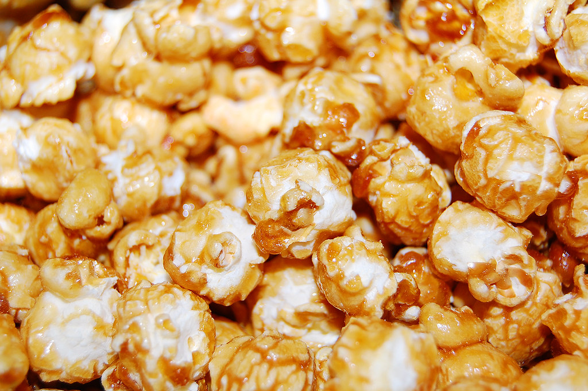

Caramel Popcorn

Description
Delicious caramel covered popcorn to satisfy that sweet tooth!
Ingredients
- 1 cup of Popcorn
- 1 cup of Butter
- 1 cup of Brown Sugar
- 1/2 cup of Corn Syrup
- 1 tsp of Baking Soda
Steps
- Pour Corn Syrup into pot and bring to a boil
- Add Baking Soda to oil
- Add Brown Sugar and Butter
- Mix constantly and add your popcorn into the mixture
- Keep stirring until the foam cooks down
- Once golden brown colour remove from heat
- Pour mixture onto baking pan
- Bake for 45 min at 250 F (121 C)